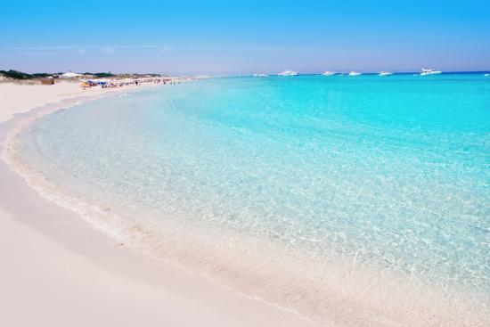

Las mejores playas de España en 2017
Según diversas encuestas, estas son las dos mejores playas de España según los españoles en 2017

Información
Playa
Comunidad Autónoma
Illetes
Islas Baleares - Formentera
La Concha
País Vasco - San Sebastián
Artículos con el resto de la lista de las mejores playas de españa en
Skyscanner
Otras páginas con más información son:
Traveler
National Geographic
Expansión